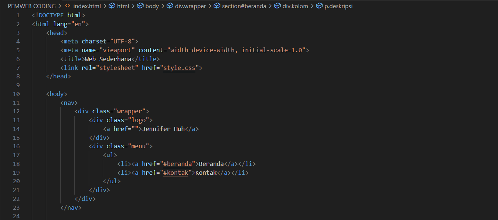
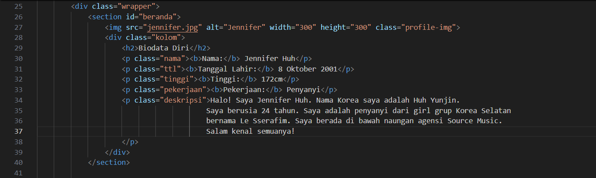
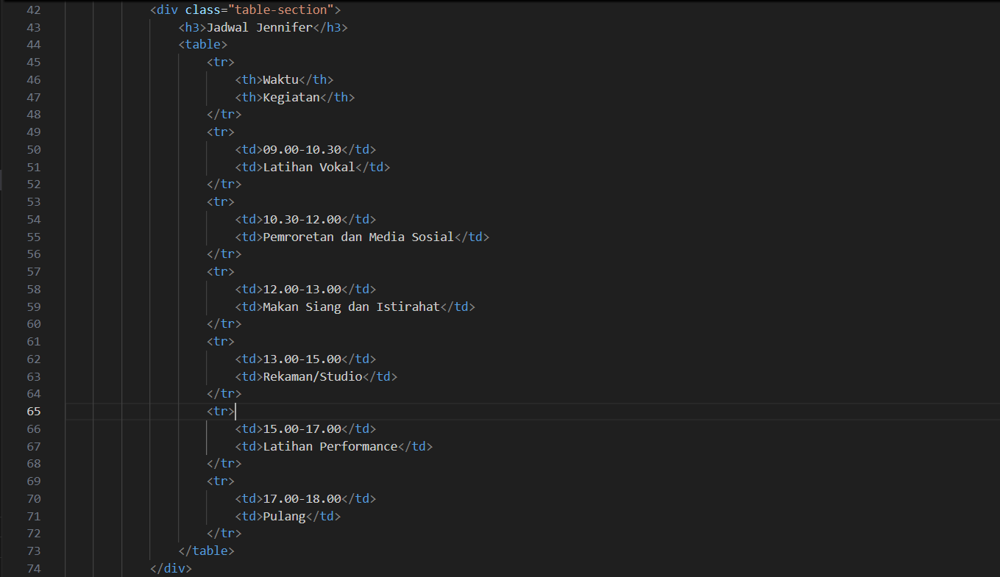
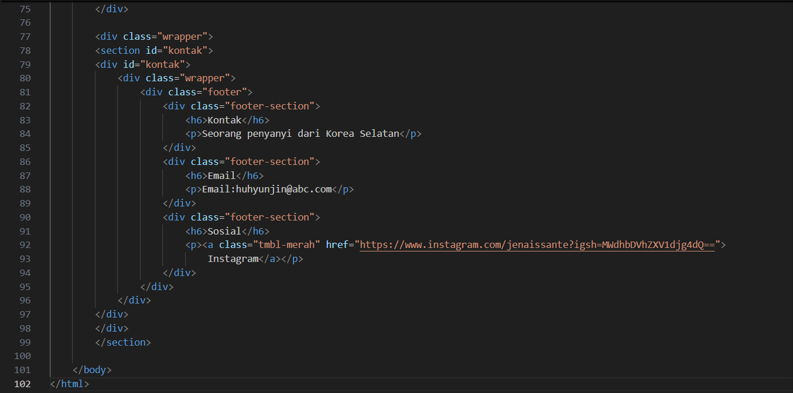

HTML (HyperText Markup Language) is the foundation of every website.
Create a new file and save it as: index.html




🟣 1. Document Structure
The HTML file starts with <!DOCTYPE html> and <html lang="en">, which define the document as HTML5 and specify that
the language used is English. This is important because it helps browsers interpret the page correctly and supports
accessibility tools such as screen readers.
🟣 2. Head Section
The <head> contains information about the webpage that isn't directly visible on the screen.
- <meta charset="UTF-8"> allows all characters (letters, numbers, symbols) to display correctly.
- <meta name="viewport" content="width=device-width, initial-scale=1.0"> makes the website responsive — it adjusts its layout for both desktop and mobile devices.
- <title>Web Sederhana</title> sets the title of the tab in the browser.
- <link rel="stylesheet" href="style.css"> connects the HTML with an external CSS file that controls how the website looks (colors, layout, fonts, etc.).
🟣 3. Body Section
Everything inside <body> is what appears visually on the webpage. It's divided into several major sections: navigation bar, profile (beranda), schedule (tabel jadwal), and contact/footer.
🟣 4. Navigation Bar (<nav>)
The <nav> element contains the website's main navigation menu. Inside it, there's a <div class="wrapper"> that centers all the content neatly on the page.
- The logo is inside <div class="logo">, and uses to make it clickable (even though the link is empty here).
- The menu is in <div class="menu"> and built using an unordered list (<ul>). Each item (<li>) contains an anchor link (<a>) that directs users to different sections of the same page — “Beranda” and “Kontak.”
When you click one of these, the browser scrolls smoothly to the corresponding section marked with that id.
🟣 5. Profile Section (<section id="beranda">)
This section introduces Jennifer and contains her biodata.
- <section> groups related content together and id="beranda" makes it easy to link to.
- <img src="jennifer.jpg" alt="Jennifer"> displays Jennifer's picture. The alt text (“Jennifer”) appears if the image doesn't load.
- <div class="kolom"> holds the textual content, including <h2> as the title (“Biodata Diri”) and several <p> tags that describe her personal information — name, birth date, height, job, and a short introduction paragraph.
The <b> tag is used to make the labels (like “Nama” or “Pekerjaan”) bold, helping readers quickly find key details.
🟣 6. Schedule Section (<div class="table-section">)
This part shows Jennifer's daily routine using a table.
- The section starts with a heading <h3>Jadwal Jennifer</h3> to introduce the table.
- <table> defines the structure. The first row uses <th> (table header) for column titles — “Waktu” and “Kegiatan.”
- Each following row (<tr>) uses <td> (table data) to fill in the time and activity. Tables like this make information easy to read and neatly organized into columns and rows.
🟣 7. Contact Section (<section id="kontak">)
The final section gives Jennifer's contact and social media information.
- It starts with <section id="kontak">, which can be reached when the user clicks the “Kontak” link from the navigation bar.
- Inside it, there's a <div class="footer"> that groups several smaller <div class="footer-section"> elements. Each one contains a heading <h6> and a short description.
The first block gives a short description (“Seorang penyanyi dari Korea Selatan”). The second block shows Jennifer's email.
The third block includes a link to her Instagram using <a class="tmbl-merah">. The class name “tmbl-merah” is for styling, so the link looks like a button rather than plain text.
This whole footer is often placed at the bottom of a webpage as a way to give visitors contact details or external links.
🟣 8. Closing Tags
The document ends with </body> and </html>, which close the main body and the HTML document respectively. This tells the browser that there's no more content to render.
✨ Summary
In short, this HTML file defines a simple personal webpage divided into clear, meaningful sections:
- The head for configuration,
- The nav for easy navigation,
- The profile section for personal info,
- The schedule table for daily activities, and
- The footer for contact and social links.
- Each part is semantically correct, making the page well-structured, easy to read, and ready for styling with CSS.